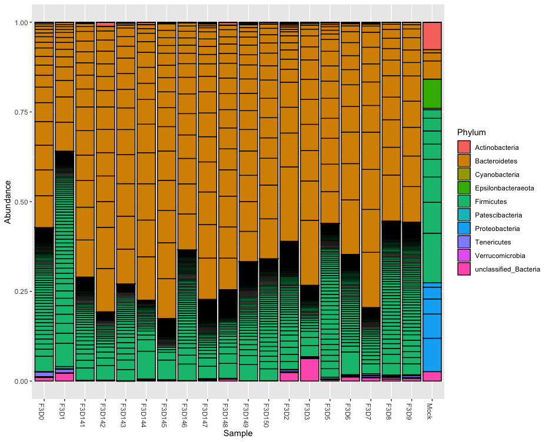
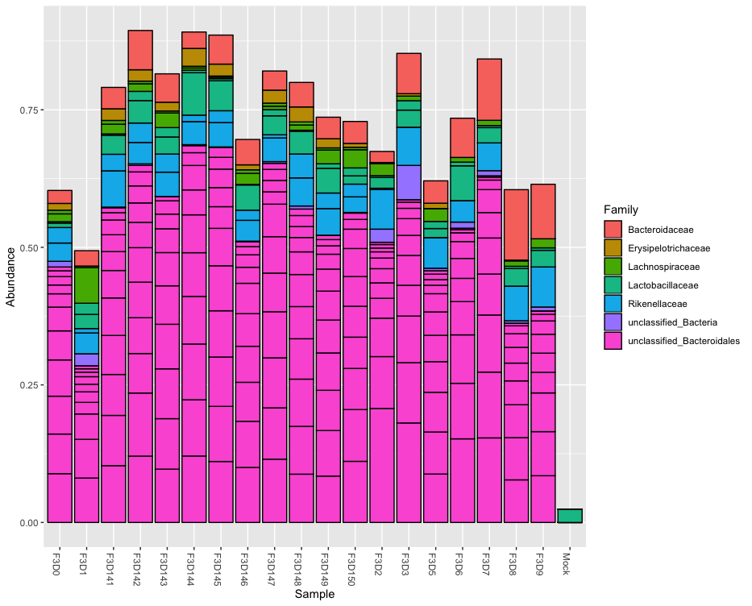

Integrate DADA2, TAG.ME and Phyloseq
Data description
The data used for this tutorial are the output of the DADA2 Tutorial. The raw data are those used in Mothur Miseq SOP, and the pipeline produces a seqtab.nochim table that will be used in this tutorial. The aim is to show how to integrade DADA2, TAG.ME and Phyloseq. Phyloseq is an R package to explore and analyze microbiomes. More information about how to use and install Phyloseq can be found in the web page: https://joey711.github.io/phyloseq/
The examples file consists of:
ASVs.fasta- Unique sequences produced by DADA2 pipelineotu_table.txt- OTU table generated from BIOM file. This kind of file can be produced by pipelines such as Qiime or Vsearch.seqtab.nochim.R- The R variable containing the final table of DADA2 pipeline.
Download files
- Download example files:
- Link, or
- Command line:
wget http://mandi.minas.fiocruz.br/TAGME/examples/examples.tar.gz
- Download models for the primers used in the article: 515F and 806R
- Link, or
- Command line:
wget http://mandi.minas.fiocruz.br/TAGME/models/515F-806R.tar.gz
- Uncompress files:
tar -zvxf examples.tar.gz tar -zvxf 515F-806R.tar.gz
R environment
The next steps are performed into R environment, that includes Rstudio.
- Load library
library(dada2)
library(phyloseq)
Taxonomic classification
- Run taxonomic prediction with parameters:
seqtab = seqtab.nochim, is the FASTA file containing the ASVs, OTUs or Unique sequences to be classified.db = "515F-806R/", is the directory containing the downloaded RDS and TXT files.specificity = 0.8, is the DEFAULT value that uses the Score cutoff corresponding to 80% specificitybatch = 50000, is the DEFAULT value limiting the number of assigned sequences per batch. Lower values consume less memory.
> library(tagme) > load("examples/seqtab.nochim.R") > taxonomy = tagmeFromDADA2(seqtab = seqtab.nochim, db = "515F-806R/") Loading required package: randomForest randomForest 4.6-12 Type rfNews() to see new features/changes/bug fixes. Loading required package: seqinr Starting Species... 29 assigned Starting Genus... 139 assigned Starting Family... 201 assigned Starting Order... 224 assigned Starting Class... 227 assigned Starting Phylum... 228 assigned Starting Domain... 232 assigned Printing Unassigned...
The taxonomic classification contains information about each rank: Domain, Phylum, Class, Order, Family, Genus, and Species.
seqID |Taxonomy | Best| Second| Ratio| ------|:------------------------------------------------------------------------------------------------------------------------------------|----:|------:|---------:| sq5 |k__Bacteria;p__Bacteroidetes;c__Bacteroidia;o__Bacteroidales;f__Bacteroidaceae;g__Bacteroides;s__Bacteroides acidifaciens | 0.65| 0.11| 1.665909| sq21 |k__Bacteria;p__Firmicutes;c__Bacilli;o__Lactobacillales;f__Lactobacillaceae;g__Lactobacillus;s__Lactobacillus reuteri | 0.97| 0.03| 4.864502| sq27 |k__Bacteria;p__Firmicutes;c__Clostridia;o__Clostridiales;f__Ruminococcaceae;g__Oscillibacter;s__Clostridium leptum | 0.47| 0.03| 1.865724| sq34 |k__Bacteria;p__Firmicutes;c__Bacilli;o__Bacillales;f__Staphylococcaceae;g__Staphylococcus;s__Staphylococcus aureus | 0.91| 0.05| 3.809139| sq44 |k__Bacteria;p__Proteobacteria;c__Gammaproteobacteria;o__Pseudomonadales;f__Moraxellaceae;g__Acinetobacter;s__Acinetobacter baumannii | 1.00| 0.00| 10.000000| sq47 |k__Bacteria;p__Firmicutes;c__Bacilli;o__Bacillales;f__Bacillaceae;g__Bacillus;s__Bacillus cereus | 0.86| 0.08| 2.946588|
Split and load into Phyloseq
TAG.ME contains one function to split each rank and create an input for phyloseq functions.
taxa = split_taxa(taxonomy) |Domain |Phylum |Class |Order |Family |Genus |Specie | |:--------|:------------------|:-------------------|:-----------------|:-----------------|:--------------|:-----------------------| |Bacteria |Firmicutes |Bacilli |Lactobacillales |Lactobacillaceae |Lactobacillus |Lactobacillus reuteri | |Bacteria |Firmicutes |Clostridia |Clostridiales |Ruminococcaceae |Oscillibacter |Clostridium leptum | |Bacteria |Firmicutes |Bacilli |Bacillales |Staphylococcaceae |Staphylococcus |Staphylococcus aureus | |Bacteria |Proteobacteria |Gammaproteobacteria |Pseudomonadales |Moraxellaceae |Acinetobacter |Acinetobacter baumannii | |Bacteria |Firmicutes |Bacilli |Bacillales |Bacillaceae |Bacillus |Bacillus cereus | |Bacteria |Epsilonbacteraeota |Campylobacteria |Campylobacterales |Helicobacteraceae |Helicobacter |Helicobacter pylori |
This structure fits to the Phyloseq function tax_table() and can be explored by its column names.
library(phyloseq) phylobj <- phyloseq(otu_table(seqtab.nochim, taxa_are_rows=FALSE), tax_table(taxa)) #Create a relative abundance table phylo.relative <- transform_sample_counts(phylobj, function(otu) otu/sum(otu))
You can now use Phyloseq to explore the different levels of your taxonomic assignment.
plot_bar(phylo.relative, fill="Phylum")

top20 <- names(sort(taxa_sums(phylo.relative), decreasing=TRUE))[1:20] ps.top20 <- prune_taxa(top20, phylo.relative) plot_bar(ps.top20, fill="Genus")
